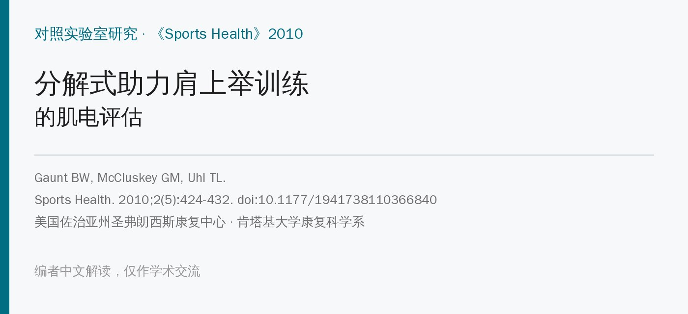
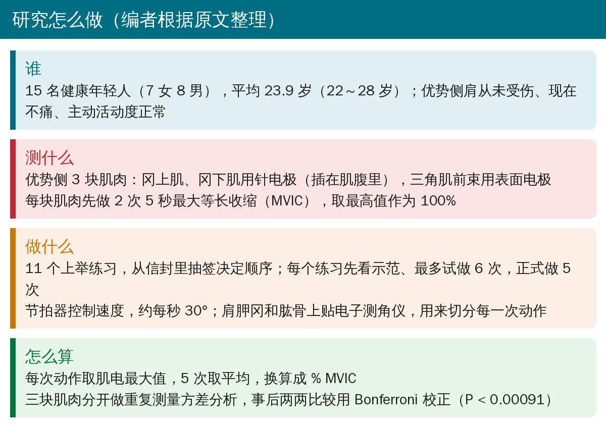
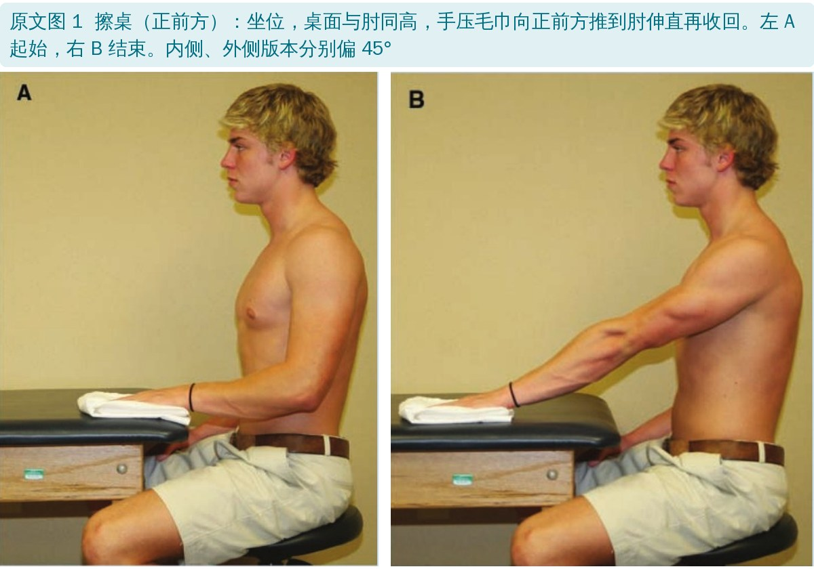
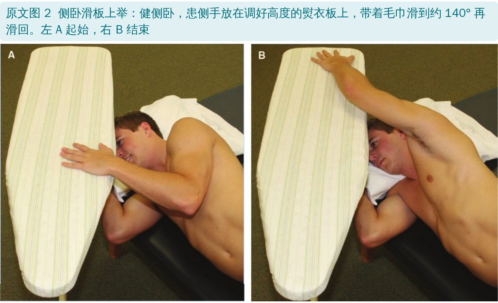
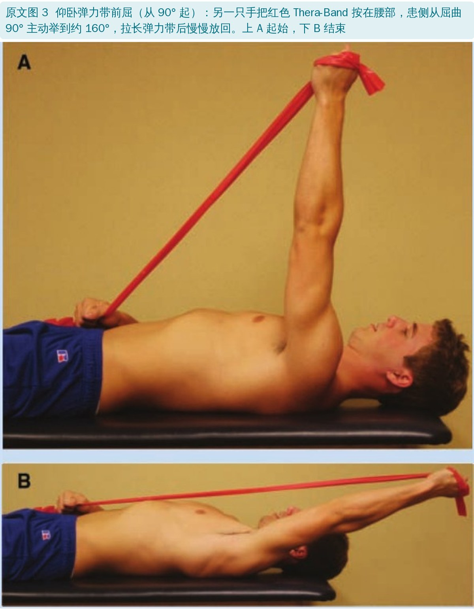
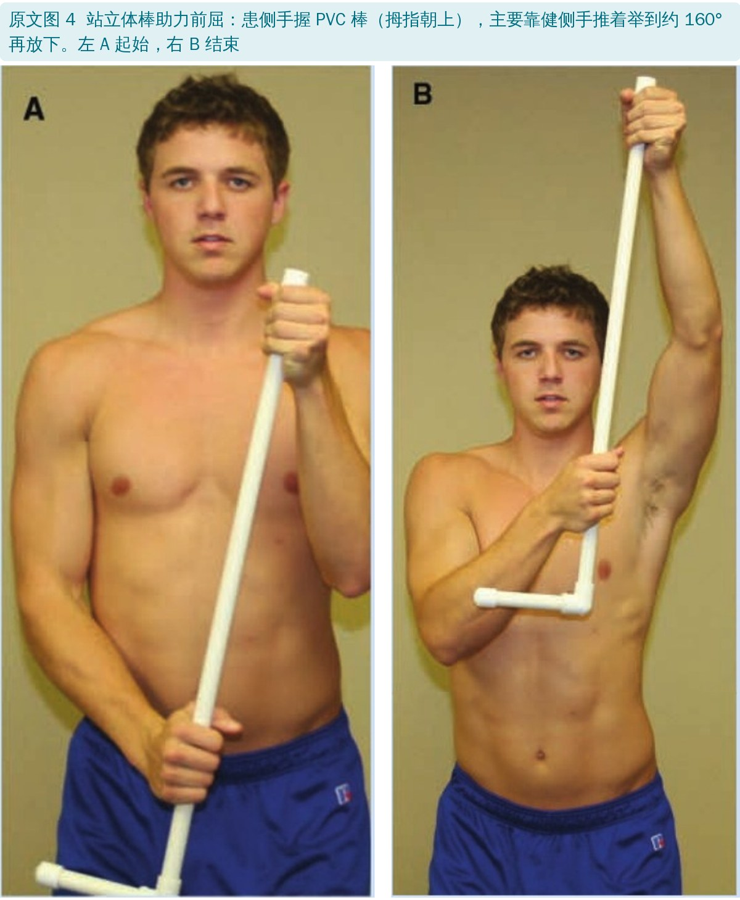
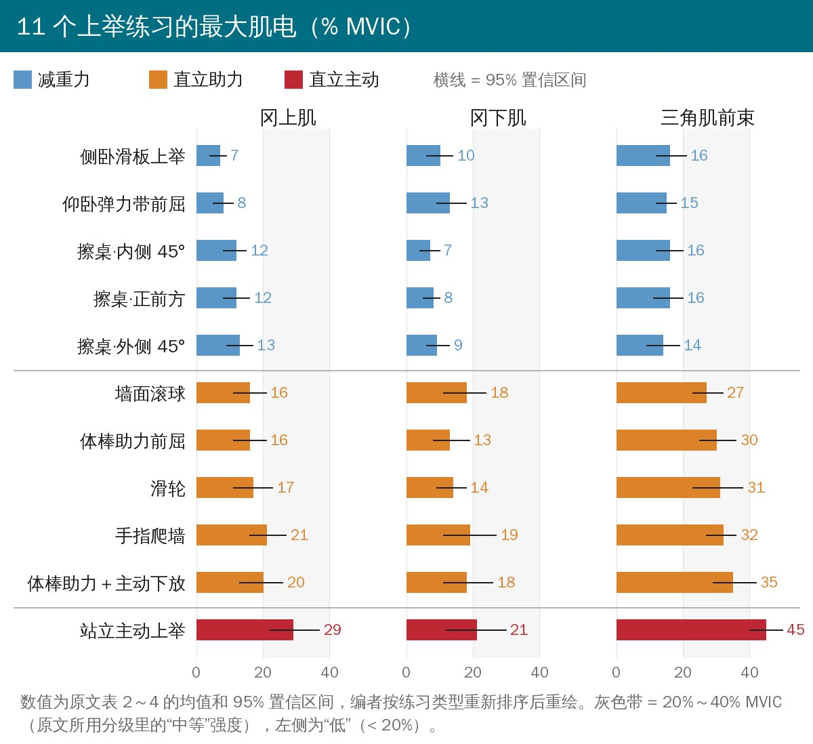
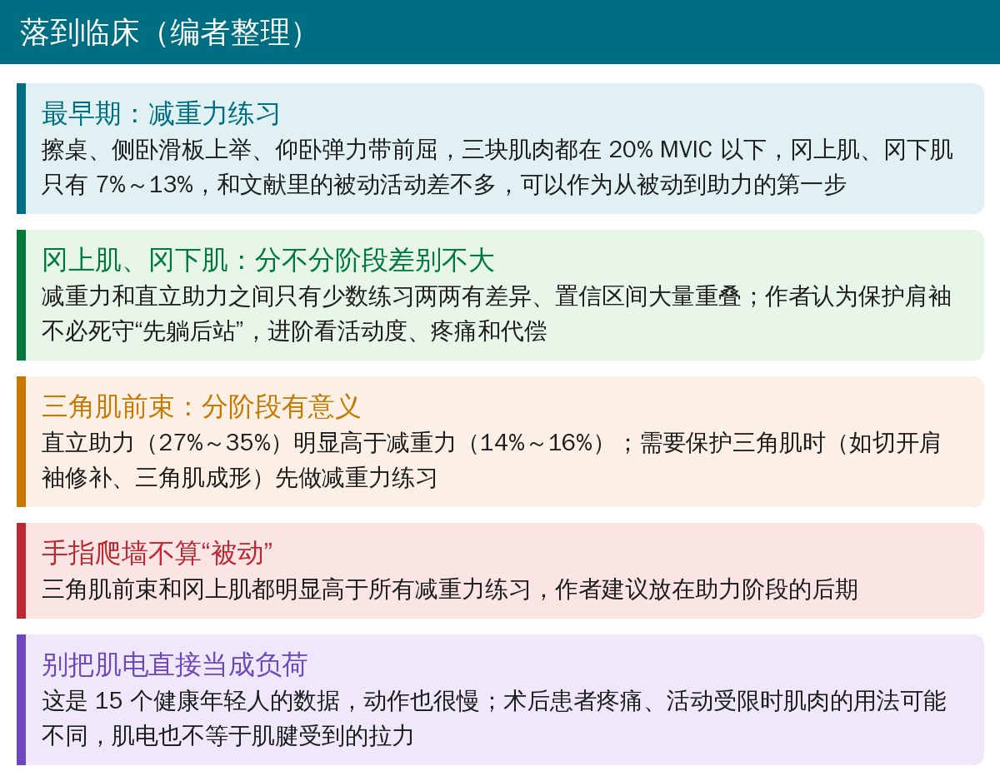

🔖原文信息（编者中文重排）
📚 文献信息
▪ Gaunt BW, McCluskey GM, Uhl TL. An Electromyographic Evaluation of Subdividing Active-Assistive Shoulder Elevation Exercises. Sports Health. 2010;2(5):424-432. doi:10.1177/1941738110366840
▪ 中文题目：分解式助力肩上举训练的肌电评估
▪ 作者单位：美国佐治亚州哥伦布市圣弗朗西斯康复中心、圣弗朗西斯骨科研究所；肯塔基大学康复科学系
▪ 研究类型：对照实验室研究（健康人一次性肌电测量）
肩袖修补、肩峰下撞击、肱二头肌长头腱固定等术后，恢复主动上举往往占了康复的一大半。常见的做法是从被动活动过渡到助力活动（AAROM），再到主动上举。
助力阶段通常还要再细分：先做减重力的（仰卧、侧卧、在桌面上滑），再做直立助力的（滑轮、爬墙、体棒），最后才站着主动举。这个顺序的依据是生物力学推理：越接近直立、重力的阻力越大，肌肉就要越用力。
可这一步到底让冈上肌、冈下肌多出了多少力，此前没有人用肌电测过。这篇就把 11 个临床常用的上举练习一个个测了，看“先躺后站”的分阶段到底有没有必要。
作者的两个假设：
• 直立助力练习的冈上肌、冈下肌、三角肌前束肌电，高于减重力练习
• 站立主动上举的肌电，高于所有助力练习

• 15 名健康年轻人（7 女 8 男），平均 23.9 岁；纳入标准是 18～40 岁、优势侧肩没有骨折、脱位、慢性疼痛或手术史，现在不痛、主动活动度正常
• 冈上肌、冈下肌用针电极（冈上肌被斜方肌盖住，表面电极测不到），三角肌前束用表面电极
• 每块肌肉做 2 次 5 秒最大等长收缩（徒手肌力测试姿势），取最高的 500 ms 均方根作为 100% MVIC
• 11 个练习抽签定顺序，每个做 5 次，节拍器控制在每秒约 30°；电子测角仪贴在肩胛冈和肱骨上，用来分出每一次动作
• 作者只看每次动作的最大值而不是平均值，理由是要估计“最坏情况”下肌肉会用多大力，好保护正在愈合的组织
作者把练习分成三类：减重力（重力帮忙完成向心阶段，或者动作方向和重力垂直、手臂重量有支撑）、直立助力（站着对抗重力上举，但手有东西托着或沿着东西滑）、直立主动（站着徒手举，作对照）。
表 1 11 个上举练习（编者根据原文表 1 翻译整理）
| 类型 | 练习 | 怎么做 |
|---|---|---|
| 减重力 | 擦桌（正前方、内侧 45°、外侧 45°） | 坐在与肘同高的桌前，手压毛巾向前推到肘伸直再收回；内、外侧版本偏 45°（外侧即肩胛平面）。盂肱关节活动约 0°～45° |
| 减重力 | 侧卧滑板上举 | 健侧卧，患侧手放在熨衣板上，带着毛巾滑到约 140° 再滑回，手的重量一直落在板上 |
| 减重力 | 仰卧弹力带前屈（从 90° 起） | 仰卧屈膝，健侧手把红色 Thera-Band 按在腰部；患侧从屈曲 90° 主动举到约 160° 拉长弹力带，再慢慢放回，全程外旋 |
| 直立助力 | 滑轮 | 主要靠健侧手拉绳，把患侧手沿肩胛平面从体侧拉到约 160°，再放下 |
| 直立助力 | 手指爬墙 | 离墙 20～40 cm，食指、中指从肩高沿墙“走”上去再走下来，约 30°～160° |
| 直立助力 | 墙面滚球 | 离墙一臂远，伸肘把网球在墙上上下滚一个手掌的距离（约 20°） |
| 直立助力 | 体棒助力前屈 | 患侧手握 PVC 棒（拇指朝上），主要靠健侧手推着举到约 160° 再放下 |
| 直立助力 | 体棒助力＋主动下放 | 同上，但放下时患侧手松开棒，伸肘自己慢慢放下（离心） |
| 直立主动 | 站立主动上举 | 站立、伸肘、拇指朝上，沿肩胛平面徒手举到约 160° 再放下 |





表 2 三块肌肉的平均最大肌电（% MVIC，均值及 95% 置信区间，编者根据原文表 2～4 合并翻译）
| 练习 | 冈上肌 | 冈下肌 | 三角肌前束 |
|---|---|---|---|
| 侧卧滑板上举 | 7（4～9） | 10（6～14） | 16（12～21） |
| 仰卧弹力带前屈 | 8（5～11） | 13（9～18） | 15（12～18） |
| 擦桌·内侧 | 12（8～15） | 7（4～10） | 16（12～20） |
| 擦桌·正前方 | 12（8～16） | 8（5～10） | 16（11～20） |
| 擦桌·外侧 | 13（9～17） | 9（6～13） | 14（9～19） |
| 墙面滚球 | 16（11～21） | 18（11～24） | 27（23～32） |
| 体棒助力前屈 | 16（11～21） | 13（8～19） | 30（25～36） |
| 滑轮 | 17（11～23） | 14（9～18） | 31（23～38） |
| 手指爬墙 | 21（16～27） | 19（11～27） | 32（27～36） |
| 体棒＋主动下放 | 20（13～26） | 18（11～26） | 35（29～42） |
| 站立主动上举 | 29（22～37） | 21（12～30） | 45（40～50） |
前 5 行为减重力，中间 5 行为直立助力，最后 1 行为直立主动。
• 站立主动上举最高（29%），显著高于其余 10 个练习
• 5 个减重力练习彼此没有差异；所有直立练习都高于侧卧滑板上举（7%）
• 直立助力里只有手指爬墙（21%）显著高于全部 5 个减重力练习，其余只比 1～2 个减重力练习高
• 站立主动上举数值最高（21%），但只显著高于擦桌·内侧（7%）
• 只有擦桌·内侧和擦桌·正前方这 2 个减重力练习，显著低于滑轮、墙面滚球和两个体棒练习；擦桌·外侧、侧卧滑板上举、仰卧弹力带和任何练习都没有差异
• 整体都偏低，最高也只有约 20%，个体差异大
• 站立主动上举最高（45%），显著高于其余所有练习
• 直立助力（27%～35%）普遍高于减重力（14%～16%），唯一的例外是滑轮：和侧卧滑板上举之间的差异 P = 0.00092，刚好没过 Bonferroni 校正后的门槛 0.00091
作者引用的分级：< 20% 为低、20%～40% 中等、41%～60% 高、> 60% 很高。照此，减重力练习全部是“低”，直立助力在“低”到“中等”之间。
• 减重力练习 ≈ 被动活动：冈上肌、冈下肌只有 7%～13% MVIC，和前人测的持续被动活动、治疗师被动上举（不超过 10%）差不多，适合作为从被动过渡到助力的第一步
• 对冈上肌、冈下肌，分阶段没有必要：虽然数值从减重力到直立助力逐渐升高，但只有少数练习两两有差异、置信区间大量重叠，第一个假设在这两块肌肉上被否定。进阶应该看活动度、疼痛耐受和有没有代偿
• 对三角肌前束，分阶段是有意义的：两类练习差得很清楚，在少数需要保护三角肌的情况下（如切开肩袖修补、三角肌成形）值得按“先减重力、后直立”来排
• 手指爬墙不该当被动活动：它的冈上肌、三角肌前束都高于所有减重力练习，应放在助力阶段后期
• 仰卧弹力带前屈其实很轻：虽然加了弹力带，肌电和其他减重力练习、被动活动相当，说明体位对低强度上举的肌肉负荷影响很大
• 和 Kronberg 的研究比，本研究冈下肌和三角肌前束的数值偏低，作者认为和动作慢（每秒 30°）有关
• 作者自认的局限：动态肌电和肌腱受到的拉力没有确定的对应关系；表面肌电有串扰，针电极只代表一小块肌肉；受试者是健康年轻人，不是有疼痛和活动受限的患者
• 健康人、慢速、一次测量：15 个 22～28 岁的健康人，每个动作只做 5 次，节拍器压到每秒 30°。真正做这些练习的是术后、疼痛、活动受限的患者，他们可能耸肩、代偿，肌肉的用法会不一样
• “没差异”≠“一样”：11 个练习两两比较共 55 次，Bonferroni 把门槛压到 P < 0.00091，15 个人的样本能检出的只有很大的差异。冈上肌、冈下肌“分阶段没必要”的结论，很大程度上是统计效能不足的结果，不能当作“已证明一样”
• 只看最大值：作者有意用峰值估计最坏情况，这对保护组织是合理的；但它不反映整个动作的持续负荷，和别人报告的平均值也不能直接比
• 肌电不等于肌腱受力：保护修补后的肩袖，关心的是肌腱受到的拉力；% MVIC 只是间接指标，作者自己也承认
• 利益冲突：研究部分由 McCluskey 教育与研究基金会资助，第二作者是该基金会研究主任，第一作者受雇于基金会董事拥有的公司（原文已声明）
• 优点：用针电极测冈上肌、冈下肌，比表面电极可信；练习描述细，临床可以直接照做；把常凭经验排的进阶顺序第一次用数据检验了一遍
• 摘要说冈上肌、冈下肌“P > .05”：摘要写两块肌肉从减重力到直立助力只是“增高趋势（P > .05）”，可结果和表 2、表 3 明明有显著差异：冈上肌所有直立练习都高于侧卧滑板上举、手指爬墙高于全部减重力练习；冈下肌 4 个直立助力练习高于擦桌·内侧和正前方。准确说法应是“只有部分练习之间有差异”
• 滑轮的三角肌前束数值：结果正文写 30% ± 12% MVIC，表 4 是 31 ± 13
• 侧卧滑板上举的三角肌前束数值：结果正文写 16% ± 7% MVIC，表 4 是 16 ± 8
• 站立主动上举算“中等”还是“高”：讨论说主动上举属于“中等强度”，但按作者自己引用的分级（41%～60% 为高），三角肌前束 45% MVIC 应属“高”，只有冈上肌（29%）、冈下肌（21%）是中等
• “减重力练习 7%～13%”：讨论把减重力练习的最大肌电概括为 7%～13% MVIC，这只是冈上肌和冈下肌的范围，三角肌前束是 14%～16%
• 显著性门槛前后两套：方法写 Bonferroni 校正后 P < 0.00091，表 2～4 的表注却写“有显著差异（P < .05）”
• 信度系数和次数对不上：方法写用 ICC(2,3) 评估信度，下标 3 表示取 3 次的平均，但每个练习做的是 5 次、分析用的也是 5 次平均
• SEM 比标准差还大：表 4 站立主动上举 SD 9、ICC 0.57，SEM 却是 10；按常用公式 SEM = SD × √(1 − ICC) 只有约 6，SEM 不可能大于 SD。滑轮（SD 13、ICC 0.59、SEM 11）、侧卧滑板上举（SD 8、SEM 7）、冈上肌仰卧弹力带（SD 6、SEM 6）也算不出来，原文没说明 SEM 用的是哪个 SD
• “前屈”还是“肩胛平面”：练习叫“active forward elevation（前屈上举）”，表 1 的做法却写“在肩胛平面内”上举；作为对照的动作和体棒“前屈”不在同一个平面
• 速度统一不了：方法说 11 个练习都用节拍器控制在每秒 30°，但手指爬墙规定“40 次/分钟、4 拍走上去再走下来”，约 130° 的弧度换算下来并不是每秒 30°；墙面滚球只有约 20° 的弧度
• 受试者和患者混用：方法同一段里前面说“participants 抽签”，后面又写“the patient was given a visual demonstration”，但受试者全是健康人
• 笔误：Greenhouse-Geiser 应为 Greenhouse-Geisser；引言“for this level or exercise”应为 of；表 1“Dominate arm”应为 Dominant

🔖临床要点（编者整理）
• 刚从被动过渡到助力：擦桌、侧卧滑板上举、仰卧弹力带前屈，三块肌肉都在 20% MVIC 以下，是比较稳妥的起点
• 保护冈上肌、冈下肌时：减重力和多数直立助力练习差别不大，不必卡死“先躺后站”，按活动度、疼痛和有没有耸肩代偿来进阶更实际
• 保护三角肌时（切开修补、三角肌成形等）：直立助力的三角肌前束明显更高，先做减重力练习
• 手指爬墙、体棒＋主动下放放在助力后期：这两个在直立助力里数值最高，主动下放本质上已经是主动离心
• 这是健康年轻人、慢速动作下的肌电，不是术后患者的数据；具体到某个术式的限制，仍以手术医生的方案为准（编者补充）
欢迎关注骨科康复小黄公众号，获取更多物理治疗的专业知识！
📄参考文献：
Gaunt BW, McCluskey GM, Uhl TL. An Electromyographic Evaluation of Subdividing Active-Assistive Shoulder Elevation Exercises. Sports Health. 2010;2(5):424-432. doi:10.1177/1941738110366840
原文 © 2010 The Author(s)，由 SAGE 出版，可在 PubMed Central（PMC3445058）免费阅读，但未采用知识共享（CC）开放许可。本文为学术交流用的中文解读：练习照片引自原文图 1～4（编者把上下两格改为左右并排，并加中文图注）；表格为编者翻译；首图、研究流程卡、肌电对比重绘图和临床要点卡为编者根据原文整理绘制。版权归原作者与出版方，仅供学习交流，如有侵权请联系删除。